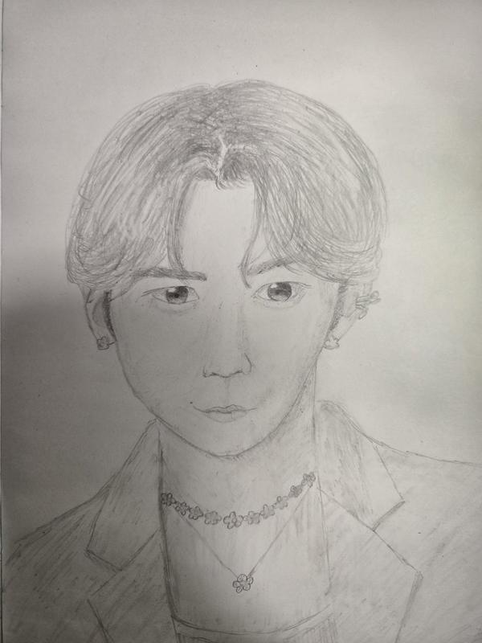
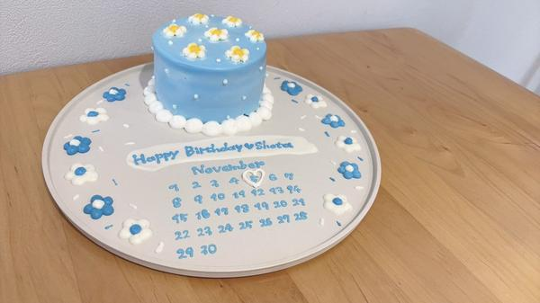
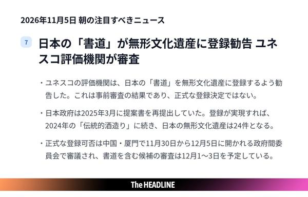
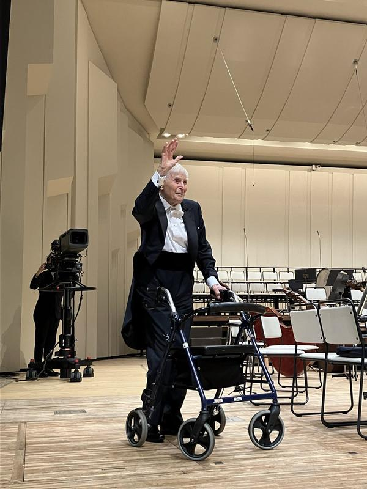
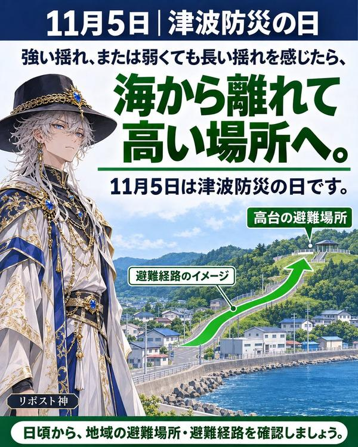
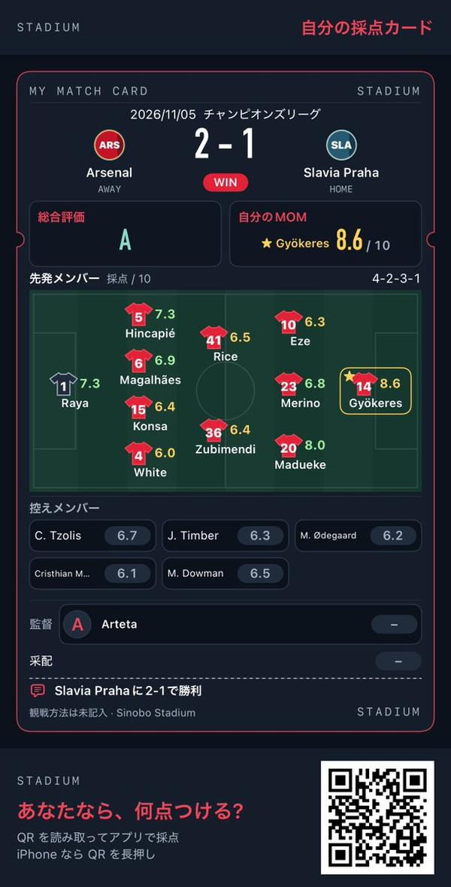
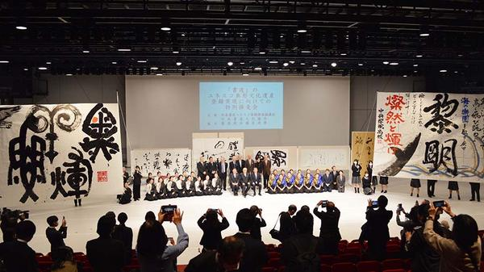

🇯🇵 日本の主要ニュース
🌍 世界の主要ニュース
🤖 AIニュース
💻 PC・ガジェットニュース
ドコモだけ鳴らなかった緊急地震速報、前田社長が謝罪10月16日の緊急地震速報がドコモの一部端末に届かなかった問題について、前田社長は決算会見で「あってはならないこと」と陳謝しました。設備投資を9000億円に増やし通信品質の改善も進めます。
出典：ITmedia／ケータイWatch
🔥 Xのトレンド（日本）
ジャンルで絞らず上位20件を掲載。「未確認」はX上の投稿だけを根拠にしたもので、報道機関による裏付けはありません。
フジテレビ「めざましテレビ」のディズニー企画のハッシュタグで、プーさんが何をしているかを当てるクイズ（正解はB「体操」）に回答やプレゼント応募の投稿が集まりました。櫻井翔さん、阿部亮平さん、川島如恵留さんの出演も話題です。
⚠ 未確認（X情報のみ）
マクドナルドが11月4日に発売した三角チョコパイの「白」の新作です。公式アカウントのキャンペーン投稿に、このハッシュタグを付けた応募の返信が大量に寄せられています。
出典：マクドナルド公式X／共同通信PRワイヤー
SixTONESの松村北斗さんが主演する映画「まだ見ぬ君へ」が2027年4月2日に公開されると発表されました。共演は堀田真由さんで、顔も名前も知らない2人が声でつながるラブストーリーです。
出典：ナタリー／サンスポ
11月5日は「いい（11）ご縁（5）」の語呂合わせで「縁結びの日」です。イラストやブログで良縁を願う投稿が広がっています。
出典：ウォーカープラス

Snow Manの渡辺翔太さんが11月5日に34歳の誕生日を迎え、ファンがお祝いのイラストやメッセージを投稿しています。
出典：WEBザテレビジョン
11月5日は「いいりんごの日」で、りんごの写真やイラストの投稿が相次いでいます。
⚠ 未確認（X情報のみ）
主演映画「まだ見ぬ君へ」の発表を受け、松村北斗さんへの祝福が集まっています。「声が生かされる作品」と期待する声や、函館ロケだったことに触れる投稿が目立ちます。
出典：テレビ朝日（Yahoo!ニュース）
FM802の朝の番組「おはたく」で行われたECCの英語クイズです。リスナーが答えの番号を投稿し、番組公式も「トレンド6位」と紹介していました。
⚠ 未確認（X情報のみ）

渡辺翔太さんの愛称で、34歳の誕生日を祝う投稿がこの名前とともにあふれています。
出典：WEBザテレビジョン
木曜朝の定番コピペ「もくもくもくようび〜」とその替え歌風の投稿が今週も広がっています。
⚠ 未確認（X情報のみ）
サッカー欧州CLでアーセナルがスラヴィア・プラハに2-1で勝利しました。ギョケレシュ選手が1ゴール1アシストの活躍で、アーセナルはCL無敗を続けています。
出典：サッカーキング（Yahoo!ニュース）

ユネスコの評価機関が、日本の「書道」を無形文化遺産に登録するよう勧告しました。12月の政府間委員会で正式決定される見通しです。
出典：NHK

指揮者ヘルベルト・ブロムシュテットさんが11月4日、99歳で亡くなりました。NHK交響楽団の桂冠名誉指揮者として日本でも親しまれ、追悼の投稿が続いています。
出典：The Guardian／NPR

11月5日は「津波防災の日」「世界津波の日」です。1854年の安政南海地震で村人を高台に導いた「稲むらの火」の逸話にちなみ、避難経路の確認を呼びかける投稿が広がっています。
出典：FNNプライムオンライン
11月5日は「いいたまごの日」です。卵料理の写真やイラストの投稿が並び、渋谷では卵を使った限定メニューも登場しています。
出典：シブヤ経済新聞
アーセナルのマドゥエケ選手が、スラヴィア・プラハ戦の9分に先制ゴールを決めました。後半には交代し、起用法をめぐる議論も出ています。
出典：Goal.com
NHK朝ドラ「ブラッサム」第29回に杉田かおるさんが浪江役で登場し、「杉田かおる？」と驚く声が相次ぎました。
出典：シネマトゥデイ
マンチェスター・シティがCLでライプツィヒに3-2で勝利しました。決勝点につながったアンダーソン選手のクロスが「デブライネのようだ」と話題になっています。
出典：theWORLD（Yahoo!ニュース）

アーセナルの若手ダウマン選手が、スラヴィア・プラハ戦の終盤にマドゥエケ選手と交代で出場しました。「投入が遅い」など起用をめぐる意見が交わされています。
出典：theWORLD

「書道」の無形文化遺産登録を勧告したユネスコの「評価機関」の名前がトレンドに入りました。登録されれば和食や歌舞伎などに続き、日本で24件目になります。
出典：毎日新聞
Grok Bot がまとめました。